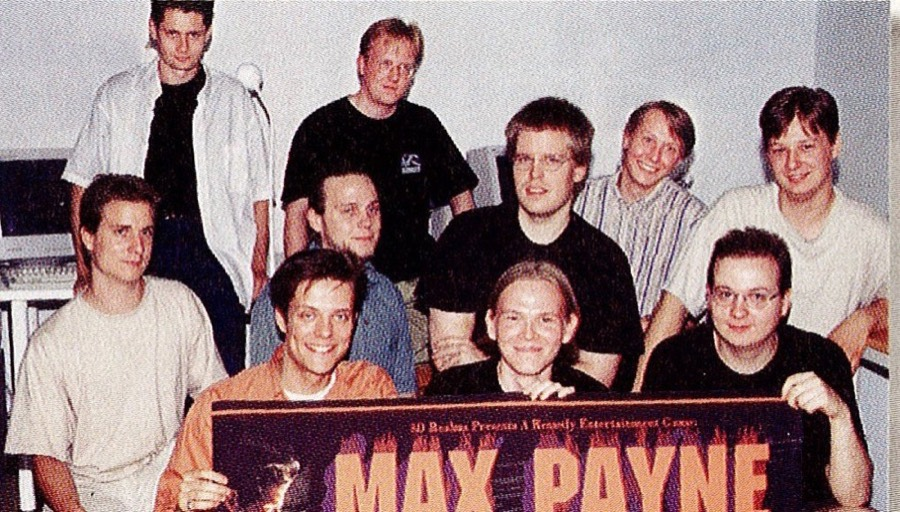

MikroBitti, October 1997. Front right of the banner: Peter Hajba (@skaven252). Centre: Samuli Syvähuoko (Gore). Back right: Markus Mäki (Henchman). Front left: Sami Järvi — Sam Lake.
PSI — Sami Tammilehto wrote most of this demo's engine, Scream Tracker and the S3M format. GORE and HENCHMAN founded Remedy in August 1995, two years after Assembly ’93. The picture is them making Max Payne.